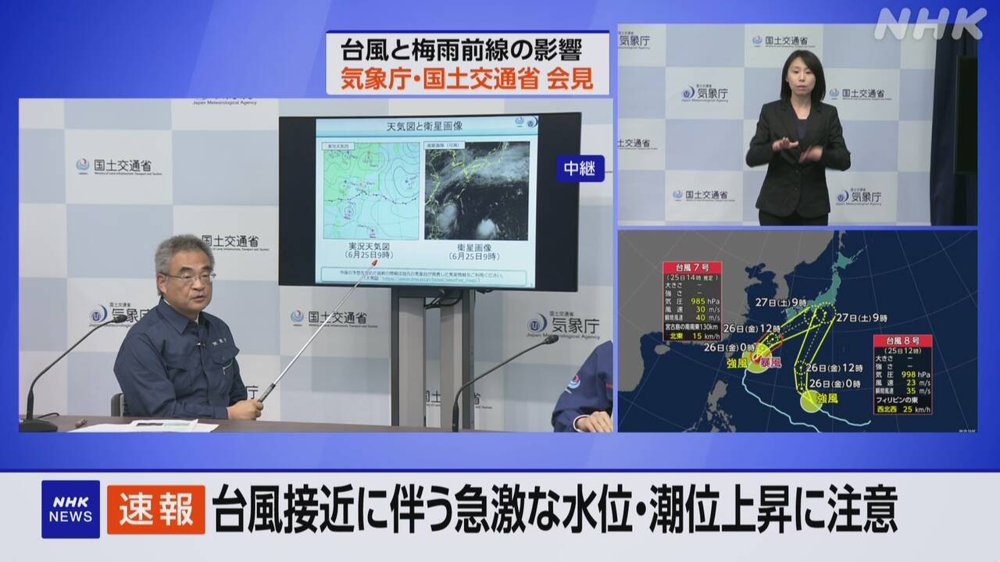
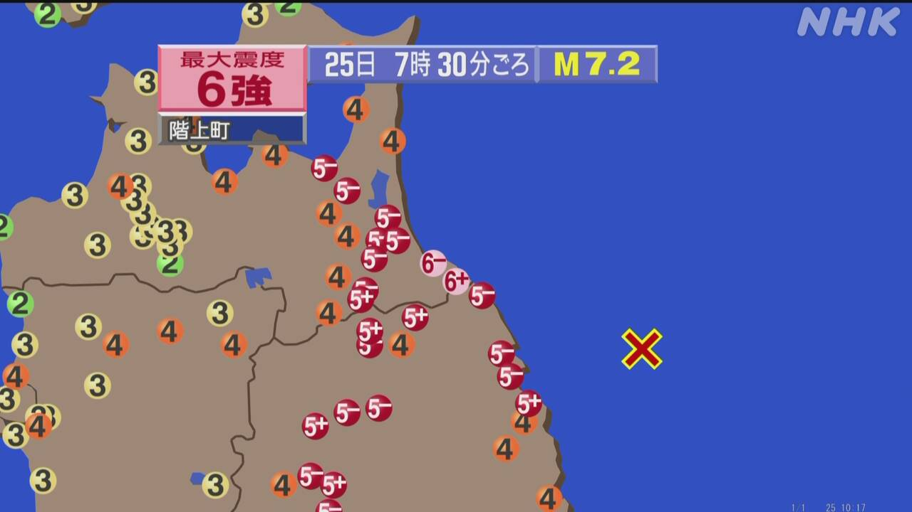
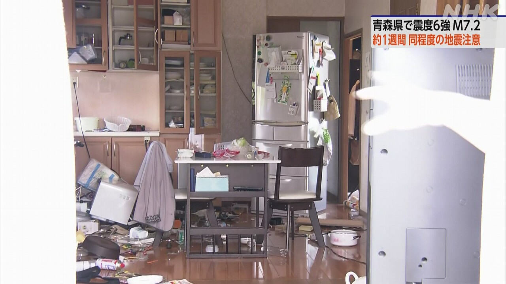

最新ニュース
1️⃣ 九州地方などでたくさん雨が降っている 災害に気をつけて
九州地方や中国地方、四国地方などで、梅雨のときの雨がたくさん降っています。
台風も近づいているため、もっとたくさん雨が降りそうです。
長崎県福江空港では、3日間に540ミリ以上の雨が降りました。これは、今まででいちばん多い雨の量です。
今までの雨で、長崎県と佐賀県では、土砂災害の危険を知らせる「レベル4危険警報」が出ている所があります。
このあとも、九州地方などの西日本から関東地方などの東日本で、たくさん雨が降りそうです。
山が崩れたり、家に水が入ったり、川の水が増えたりする危険があります。
気象庁は、災害に気をつけるように言っています。
2️⃣ 台風が近づいている 27日ぐらいまでたくさん雨が降りそうだ

台風の情報です。
台風7号は、沖縄の南の海を北に進んでいます。
これから、26日、沖縄県に近づきそうです。
沖縄県と鹿児島県の奄美地方では、強い風が吹きそうです。
26日は、走っているトラックが倒れるぐらいのとても強い風が吹きそうです。波も高くなりそうです。
日本の南の海には、台風8号もあります。
気象庁は「梅雨のときの雨と台風のため、 西日本から東日本では、27日の土曜日ぐらいまで、たくさんの雨がずっと降りそうだ」と言っています。
「ハザードマップ」で、家や会社がある場所が安全かどうかチェックしてください。そして、避難する場所を調べておいてください。
3️⃣ 青森県で震度6強の大きい地震があった

地震のニュースです。
25日午前7時半ごろ、青森県などで大きい地震がありました。
青森県の階上町で震度6強、八戸市で震度6弱でした。岩手県や宮城県などでも大きく揺れました。
気象庁は、この地震で津波の被害が出る心配はないと言いました。
気象庁は、「これから1週間ぐらいは、大きい地震があるかもしれません。寝る所を安全な場所に移したりして、気をつけてください」と話しています。
4️⃣ 東北地方 地震でけがをした人がいる

25日の地震で、けがをした人がいます。
岩手県の釜石市では、女性が家で転んで腕の骨を折るけがをしました。青森県の階上町や八戸市では、逃げようとして転んでけがをした人がいます。
八戸市では、家の周りの壁が壊れたり、窓のガラスが割れたりしました。
階上町では、学校の食事を作っている給食センターで水が使えなくなりました。食事を作ることができないため、26日の午後の授業が休みになりました。
- 〜ている / 〜でいる
- 〜など
- 〜ため
- 〜そうだ
- 〜以上
- 〜まで
- 〜ところ
- 使役 (〜させる / 〜せる)
- 〜がある / 〜がいる
- 〜から
- 〜後 / 〜あと
- 〜たり〜たりする
- 〜ように
- 〜ても / 〜でも
- 〜くらい / 〜ぐらい
- 〜ず / 〜ずに
- 〜から〜まで
- 〜てください / 〜でください
- 〜ておく
- 〜ごろ
- 〜や〜など
- 〜かもしれない / 〜かもしれません
- 〜として
- 〜になる
- 〜こと
- 〜ことができる
vebaev.github.io
Generated: 2026-06-25 19:05:48 UTC